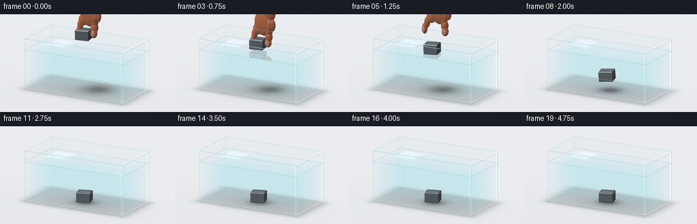
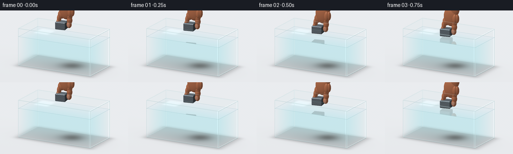

CODING AGENTS AS PIXEL WORLD MODELS
traex/GPT-6.1-Sol · phygen_006
点击播放 · 原生 RGB 像素
逐轮保存的候选
回放视频、检查图与代码变化。
每份候选均可单独播放。实际图片检查记录在下方工具轨迹中。
候选 01播放与检查图
点击播放 · 原生 RGB 像素


展开代码变化
--- 上一保存版本
+++ 本次保存版本
@@ -0,0 +1,323 @@
+"""Procedural, supersampled rendering of gently released iron in a glass tank.
+Only numpy/Pillow and analytic geometry are used; no external assets.
+"""
+from pathlib import Path
+import json
+import numpy as np
+from PIL import Image, ImageDraw, ImageFilter
+import artifact_io
+
+ROOT = Path(__file__).resolve().parent
+SPEC = json.loads((ROOT / 'task_spec.json').read_text())
+W,H = SPEC['width'], SPEC['height']
+SS=3
+RW,RH=W*SS,H*SS
+CAM=np.array([6.5,5.8,12.0])
+TARGET=np.array([0.,1.7,0.])
+FORWARD=(TARGET-CAM); FORWARD/=np.linalg.norm(FORWARD)
+RIGHT=np.cross(FORWARD,[0.,1.,0.]); RIGHT/=np.linalg.norm(RIGHT)
+UP=np.cross(RIGHT,FORWARD)
+VIEW=9.4
+xx,yy=np.meshgrid((np.arange(RW)+.5-RW/2)*VIEW/RW, (RH/2-np.arange(RH)-.5)*VIEW/RW)
+ORIGIN=(CAM+xx[...,None]*RIGHT+yy[...,None]*UP).reshape(-1,3)
+D=np.broadcast_to(FORWARD, ORIGIN.shape)
+N=len(ORIGIN)
+LIGHT=np.array([-3.,8.,6.]); LIGHT/=np.linalg.norm(LIGHT)
+FAR=1.e5
+TANK_LO=np.array([-3.,.22,-1.5]); TANK_HI=np.array([3.,3.05,1.5])
+WATER=2.42
+
+
+def box_intersect(o,d,lo,hi):
+ inv=1/np.where(abs(d)>1e-9,d,1e-9)
+ a=(lo-o)*inv; b=(hi-o)*inv
+ low=np.minimum(a,b); high=np.maximum(a,b)
+ enter=np.max(low,axis=1); leave=np.min(high,axis=1)
+ ok=(leave>=np.maximum(enter,0))
+ axis=np.argmax(low,axis=1)
+ normal=np.zeros_like(o)
+ normal[np.arange(len(o)),axis]=-np.sign(d[np.arange(len(o)),axis])
+ return np.where(ok,enter,FAR),np.where(ok,leave,-FAR),normal
+
+
+def ellipsoid(o,d,center,radius):
+ q=(o-center)/radius; v=d/radius
+ a=np.sum(v*v,1); b=np.sum(q*v,1); c=np.sum(q*q,1)-1
+ delta=b*b-a*c
+ t=(-b-np.sqrt(np.maximum(delta,0)))/a
+ ok=(delta>0)&(t>0)
+ p=o+d*t[:,None]
+ n=(p-center)/(radius*radius)
+ n/=np.maximum(np.linalg.norm(n,axis=1)[:,None],1e-8)
+ return np.where(ok,t,FAR),n,p
+
+
+def rotation(ax,ay,az):
+ cx,sx=np.cos(ax),np.sin(ax); cy,sy=np.cos(ay),np.sin(ay); cz,sz=np.cos(az),np.sin(az)
+ rx=np.array([[1,0,0],[0,cx,-sx],[0,sx,cx]])
+ ry=np.array([[cy,0,sy],[0,1,0],[-sy,0,cy]])
+ rz=np.array([[cz,-sz,0],[sz,cz,0],[0,0,1]])
+ return rz@ry@rx
+
+
+# Convex bevelled block, made from 26 intersecting analytic half-spaces.
+HALF=np.array([.40,.28,.33]); BEVEL=.035
+PLANES=[]
+for axis in range(3):
+ for sign in [-1,1]:
+ n=np.zeros(3); n[axis]=sign
+ PLANES.append((n,HALF[axis]))
+for a,b in [(0,1),(0,2),(1,2)]:
+ for sa in [-1,1]:
+ for sb in [-1,1]:
+ n=np.zeros(3); n[a]=sa; n[b]=sb
+ PLANES.append((n,HALF[a]+HALF[b]-BEVEL))
+for a in [-1,1]:
+ for b in [-1,1]:
+ for c in [-1,1]:
+ PLANES.append((np.array([a,b,c]),sum(HALF)-2*BEVEL))
+
+
+def metal_intersect(o,d,center,rot):
+ ol=(o-center)@rot; dl=d@rot
+ broad,_,_=box_intersect(ol,dl,-HALF,HALF)
+ ids=np.flatnonzero(broad<FAR)
+ result=np.full(len(o),FAR); normals=np.zeros_like(o); points=np.zeros_like(o)
+ if not len(ids): return result,normals,points
+ q=ol[ids]; v=dl[ids]
+ low=np.full(len(ids),-FAR); high=np.full(len(ids),FAR); nout=np.zeros_like(q)
+ for n,b in PLANES:
+ den=v@n; dist=b-q@n
+ tt=dist/np.where(abs(den)>1e-10,den,1e-10)
+ update=(den<0)&(tt>low)
+ low=np.where(update,tt,low)
+ nout[update]=n/np.linalg.norm(n)
+ high=np.where(den>0,np.minimum(high,tt),high)
+ high=np.where((abs(den)<1e-10)&(dist<0),-FAR,high)
+ ok=(low<=high)&(low>0)
+ result[ids]=np.where(ok,low,FAR)
+ normals[ids]=nout@rot.T
+ points[ids]=q+v*low[:,None]
+ return result,normals,points
+
+
+def metal_color(n,p,d):
+ diff=np.maximum(n@LIGHT,0)
+ view=-d
+ half=LIGHT+view; half/=np.linalg.norm(half,axis=1)[:,None]
+ spec=np.maximum(np.sum(n*half,1),0)**65
+ # Restrained fine brushed texture and oxidized steel variations.
+ grain=.5+.5*np.sin(p[:,0]*170+p[:,2]*7)*np.sin(p[:,2]*297+p[:,1]*11)
+ mottled=.5+.5*np.sin(p[:,0]*21+p[:,1]*35)*np.cos(p[:,2]*28-p[:,0]*13)
+ base=np.array([.35,.38,.405])
+ col=base[None,:]*(.44+.82*diff[:,None])
+ col*= (.92+.05*grain+.065*mottled)[:,None]
+ col+=spec[:,None]*np.array([.52,.53,.54])
+ return np.clip(col,0,1)
+
+
+def hand_parts(t,block_center):
+ # A thumb and an index finger pinch the block from the sides.
+ release=max(0.,t-1.04)
+ opening=min(.25,release*.8)
+ rise= min(3.,release*3.6)
+ y=block_center[1] if t<=1.04 else WATER+.28
+ cy=y+rise
+ parts=[]
+ skin=np.array([.70,.43,.30])
+ def add(c,r,color=skin): parts.append((np.array(c),np.array(r),color))
+ add([.19+rise*.14,cy+1.23,.02],[.58,.74,.285])
+ add([.49+rise*.18,cy+2.02,.01],[.40,.76,.26])
+ # Visible, bent pinching fingers; the lower tips are clear of the water.
+ add([-.46-opening,cy+.15,.07],[.145,.31,.18])
+ add([-.40-opening*.6,cy+.50,.03],[.16,.31,.17])
+ add([-.22-opening*.2,cy+.81,.015],[.27,.32,.19])
+ add([.46+opening,cy+.14,.08],[.19,.26,.19])
+ add([.48+opening*.6,cy+.46,.04],[.205,.30,.20])
+ add([.46+opening*.2,cy+.79,.02],[.22,.34,.21])
+ # Other fingers curl into the palm.
+ add([.59+rise*.14,cy+1.13,.17],[.19,.37,.17])
+ add([.76+rise*.14,cy+1.16,.12],[.15,.33,.15])
+ # Nails are soft, translucent matte ovals, not white disks.
+ add([.485+opening,cy+.14,.255],[.115,.155,.026],np.array([.76,.54,.44]))
+ add([-.47-opening,cy+.12,.228],[.092,.17,.023],np.array([.77,.56,.47]))
+ return parts
+
+
+def hand_render(o,d,parts):
+ best=np.full(len(o),FAR); out=np.zeros_like(o)
+ for c,r,col in parts:
+ # Projected bounds cull the expensive ellipsoid math.
+ dist=np.linalg.norm(o-c,axis=1)
+ clos=np.sum((c-o)*d,axis=1)
+ radial=np.maximum(dist*dist-clos*clos,0)
+ ids=np.flatnonzero(radial<max(r)**2*1.1)
+ if not len(ids): continue
+ t,n,p=ellipsoid(o[ids],d[ids],c,r)
+ use=t<best[ids]
+ ids2=ids[use]; n=n[use]; p=p[use]
+ if not len(ids2): continue
+ lam=np.maximum(n@LIGHT,0)
+ h=LIGHT-d[ids2]; h/=np.linalg.norm(h,axis=1)[:,None]
+ spec=np.maximum(np.sum(n*h,1),0)**24
+ shading=.58+.42*lam
+ flesh=col*shading[:,None]+spec[:,None]*.075
+ # A subtle warmer grazing-angle tone produces soft skin.
+ grazing=(1-np.maximum(np.sum(n*-d[ids2],1),0))**2
+ flesh+=grazing[:,None]*np.array([.035,.008,.002])
+ best[ids2]=t[use]; out[ids2]=flesh
+ return best,out
+
+
+def project(p):
+ p=np.asarray(p)-TARGET
+ return (RW/2+np.dot(p,RIGHT)*RW/VIEW,RH/2-np.dot(p,UP)*RW/VIEW)
+
+
+def draw_tank_edges(image):
+ layer=Image.new('RGBA',image.size,(0,0,0,0)); dr=ImageDraw.Draw(layer)
+ lo=TANK_LO; hi=TANK_HI
+ # All glass edges remain visible, but the rear seams are deliberately faint.
+ for y in [lo[1],hi[1]]:
+ corners=[[-3,y,-1.5],[3,y,-1.5],[3,y,1.5],[-3,y,1.5]]
+ for j in range(4):
+ a,b=corners[j],corners[(j+1)%4]
+ pts=[project(a),project(b)]
+ back=(a[2]<0 and b[2]<0) or (a[0]<0 and b[0]<0)
+ dr.line(pts,fill=(87,123,127,55 if back else 105),width=3)
+ pts2=[(x-.7,y-.7) for x,y in pts]
+ dr.line(pts2,fill=(239,250,249,110 if back else 190),width=2)
+ for x in [-3,3]:
+ for z in [-1.5,1.5]:
+ pts=[project([x,lo[1],z]),project([x,hi[1],z])]
+ back=x<0 and z<0
+ dr.line(pts,fill=(72,111,119,42 if back else 95),width=3)
+ dr.line([(x+.9,y) for x,y in pts],fill=(246,255,254,125),width=2)
+ # Four delicate meniscus lines at the water's contact with glass.
+ corners=[[-3,WATER,-1.5],[3,WATER,-1.5],[3,WATER,1.5],[-3,WATER,1.5]]
+ for j in range(4):
+ dr.line([project(corners[j]),project(corners[(j+1)%4])],fill=(112,166,174,100),width=2)
+ return Image.alpha_composite(image.convert('RGBA'),layer).convert('RGB')
+
+
+def frame(t):
+ # Slow manual lowering followed by acceleration under gravity and drag.
+ if t<=1.0:
+ s=t/1.0
+ bottom=3.04-(3.04-WATER)*(s*s*(3-2*s))
+ else:
+ tau=t-1.0
+ distance=2.5*(tau-.33*(1-np.exp(-tau/.33)))
+ bottom=max(.235,WATER-distance)
+ fall=np.clip((WATER-bottom)/(WATER-.235),0,1)
+ wobble=np.sin(fall*np.pi)
+ rot=rotation(.075*wobble,.17+.11*fall,.12*wobble)
+ center=np.array([-.20+.08*fall,bottom+.28,.03+.06*fall])
+ # Account for tilted lowest corner during fall.
+ center[1]=bottom+np.sum(np.abs(rot[1,:])*HALF)
+ parts=hand_parts(t,center)
+
+ floor_t=(.17-ORIGIN[:,1])/D[:,1]
+ floor=ORIGIN+D*floor_t[:,None]
+ # Neutral seamless tabletop, gentle vignette and a soft tank contact shadow.
+ shade=.925-.025*np.clip((floor[:,2]+3)/18,0,1)
+ col=np.stack([shade*.99,shade,shade*1.012],1)
+ inside=np.maximum(abs(floor[:,0])-2.9,0)**2/.18+np.maximum(abs(floor[:,2])-1.42,0)**2/.12
+ tankshadow=np.exp(-inside)*.15
+ contact=np.exp(-((floor[:,0]-.10)**2/7+(floor[:,2]-.23)**2/2.3))*.08
+ col*=1-(tankshadow+contact)[:,None]
+ # Block shadow on the bottom, broad while above and tighter as it settles.
+ spread=.19+.16*(bottom-.235)
+ shadow=np.exp(-((floor[:,0]-(center[0]+.22*bottom))**2/(spread+.13)+
+ (floor[:,2]-(center[2]-.15*bottom))**2/(spread+.08)))
+ col*=1-shadow[:,None]*(.12+.30*(1-fall)**0+.07*fall)
+ best=floor_t.copy()
+ iron_t,iron_n,iron_p=metal_intersect(ORIGIN,D,center,rot)
+ iron=iron_t<best
+ col[iron]=metal_color(iron_n[iron],iron_p[iron],D[iron]); best[iron]=iron_t[iron]
+ ht,hcol=hand_render(ORIGIN,D,parts)
+ hand=ht<best; col[hand]=hcol[hand]; best[hand]=ht[hand]
+
+ # Transparent water: wavelength-dependent attenuation along the viewing ray.
+ we,wx,wn=box_intersect(ORIGIN,D,TANK_LO,np.array([3.,WATER,1.5]))
+ travel=np.maximum(0,np.minimum(wx,best)-np.maximum(we,0))
+ travel=np.where(we<FAR,travel,0)
+ transmission=np.exp(-travel[:,None]*np.array([.087,.026,.016]))
+ waterlight=np.array([.43,.72,.77])
+ col=col*transmission+waterlight*(1-transmission)
+
+ # Water surface is a reflective plane, interrupted by gentle circular ripples.
+ ts=(WATER-ORIGIN[:,1])/D[:,1]
+ sp=ORIGIN+D*ts[:,None]
+ surf=(abs(sp[:,0])<3)&(abs(sp[:,2])<1.5)&(ts<best)
+ ids=np.flatnonzero(surf)
+ if len(ids):
+ p=sp[ids]
+ r=np.sqrt((p[:,0]+.20)**2+(p[:,2]-.03)**2)+1e-6
+ age=max(0.,t-.90)
+ slope=np.zeros(len(ids)); crest=np.zeros(len(ids))
+ if age>0:
+ for offset,amp in [(0.,1.),(.18,.70),(.37,.45)]:
+ radius=age*1.02-offset
+ if radius>0:
+ band=(r-radius)/.075
+ strength=np.exp(-age*.83)*amp
+ slope+=.10*strength*(-2*band)*np.exp(-band*band)
+ crest+=strength*np.exp(-band*band)
+ normals=np.stack([-slope*(p[:,0]+.20)/r,np.ones(len(ids)),-slope*(p[:,2]-.03)/r],1)
+ normals/=np.linalg.norm(normals,axis=1)[:,None]
+ cosine=np.clip(np.sum(normals*-D[ids],1),0,1)
+ fresnel=.025+.975*(1-cosine)**5
+ rd=D[ids]-2*np.sum(D[ids]*normals,1)[:,None]*normals
+ ro=p+normals*.0001
+ refcol=np.broadcast_to(np.array([.87,.92,.96]),(len(ids),3)).copy()
+ # Reflected steel makes contact with the surface readable.
+ rt,rn,rp=metal_intersect(ro,rd,center,rot)
+ hit=rt<FAR
+ if np.any(hit): refcol[hit]=metal_color(rn[hit],rp[hit],rd[hit])
+ rh,rc=hand_render(ro,rd,parts)
+ hit=(rh<rt)
+ refcol[hit]=rc[hit]
+ col[ids]=col[ids]*(1-fresnel[:,None])+refcol*fresnel[:,None]
+ col[ids]+=slope[:,None]*.15+crest[:,None]*.025
+ # Broad reflected soft-box glow across a small portion of the surface.
+ glint=np.exp(-((p[:,0]+1.9)/.60)**8-((p[:,2]+.5)/.66)**8)
+ col[ids]+=glint[:,None]*.055
+
+ # Clear tank walls: mild Fresnel reflection; corners thicker and more cyan.
+ ge,gx,gn=box_intersect(ORIGIN,D,TANK_LO,TANK_HI)
+ for depth in [gx,ge]:
+ valid=(depth>0)&(depth<best)&(ge<FAR)
+ ids=np.flatnonzero(valid)
+ if not len(ids): continue
+ p=ORIGIN[ids]+D[ids]*depth[ids,None]
+ edge_x=np.minimum(abs(p[:,0]-3),abs(p[:,0]+3))
+ edge_z=np.minimum(abs(p[:,2]-1.5),abs(p[:,2]+1.5))
+ edge_y=np.minimum(abs(p[:,1]-.22),abs(p[:,1]-3.05))
+ edges=((edge_x<.045)&(edge_z<.045))|((edge_y<.045)&((edge_x<.045)|(edge_z<.045)))
+ opacity=np.full(len(ids),.035); opacity[edges]=.19
+ col[ids]=col[ids]*(1-opacity[:,None])+np.array([.72,.86,.88])*opacity[:,None]
+ # Subtle vertical glass specular streak at the right edge.
+ gloss=np.exp(-((p[:,0]-2.92)/.032)**2)*.055
+ col[ids]+=gloss[:,None]
+
+ # Deterministic subpixel sensor texture, kept below a single output value.
+ noise=np.sin(np.arange(N)*12.9898+78.233)*.0008
+ col+=noise[:,None]
+ image=Image.fromarray((np.clip(col.reshape(RH,RW,3),0,1)*255+.5).astype(np.uint8))
+ image=draw_tank_edges(image)
+ image=image.resize((W,H),Image.Resampling.LANCZOS)
+ return np.asarray(image)
+
+
+def main():
+ frames=[]
+ for i in range(SPEC['frames']):
+ frames.append(frame(i/SPEC['fps']))
+ print(f'Rendered {i+1}/{SPEC["frames"]}',flush=True)
+ frames=np.stack(frames).astype(np.uint8)
+ artifact_io.save(frames,ROOT)
+ print('Saved RGB video:',frames.shape,flush=True)
+
+if __name__=='__main__':
+ main()
可观测工具轨迹
实际执行的命令与返回图片。
命令 1exit 0
/bin/bash -lc "ls -la && cat prompt.txt && printf '\\n--- RULES ---\\n' && cat GENERATION_RULES.md && printf '\\n--- SPEC ---\\n' && cat task_spec.json"
命令 2exit 0
/bin/bash -lc "cat artifact_io.py && python - <<'PY'
import numpy, PIL
print('numpy',numpy.__version__,'PIL',PIL.__version__)
PY"命令 3exit 0
/bin/bash -lc "python - <<'PY'
import importlib.util
print('scipy', bool(importlib.util.find_spec('scipy')))
PY"命令 4exit 0
/bin/bash -lc "cat > generate.py <<'PY'
\"\"\"Procedural, supersampled rendering of gently released iron in a glass tank.
Only numpy/Pillow and analytic geometry are used; no external assets.
\"\"\"
from pathlib import Path
import json
import numpy as np
from PIL import Image, ImageDraw, ImageFilter
import artifact_io
ROOT = Path(__file__).resolve().parent
SPEC = json.loads((ROOT / 'task_spec.json').read_text())
W,H = SPEC['width'], SPEC['height']
SS=3
RW,RH=W*SS,H*SS
CAM=np.array([6.5,5.8,12.0])
TARGET=np.array([0.,1.7,0.])
FORWARD=(TARGET-CAM); FORWARD/=np.linalg.norm(FORWARD)
RIGHT=np.cross(FORWARD,[0.,1.,0.]); RIGHT/=np.linalg.norm(RIGHT)
UP=np.cross(RIGHT,FORWARD)
VIEW=9.4
xx,yy=np.meshgrid((np.arange(RW)+.5-RW/2)*VIEW/RW, (RH/2-np.arange(RH)-.5)*VIEW/RW)
ORIGIN=(CAM+xx[...,None]*RIGHT+yy[...,None]*UP).reshape(-1,3)
D=np.broadcast_to(FORWARD, ORIGIN.shape)
N=len(ORIGIN)
LIGHT=np.array([-3.,8.,6.]); LIGHT/=np.linalg.norm(LIGHT)
FAR=1.e5
TANK_LO=np.array([-3.,.22,-1.5]); TANK_HI=np.array([3.,3.05,1.5])
WATER=2.42
def box_intersect(o,d,lo,hi):
inv=1/np.where(abs(d)>1e-9,d,1e-9)
a=(lo-o)*inv; b=(hi-o)*inv
low=np.minimum(a,b); high=np.maximum(a,b)
enter=np.max(low,axis=1); leave=np.min(high,axis=1)
ok=(leave>=np.maximum(enter,0))
axis=np.argmax(low,axis=1)
normal=np.zeros_like(o)
normal[np.arange(len(o)),axis]=-np.sign(d[np.arange(len(o)),axis])
return np.where(ok,enter,FAR),np.where(ok,leave,-FAR),normal
def ellipsoid(o,d,center,radius):
q=(o-center)/radius; v=d/radius
a=np.sum(v*v,1); b=np.sum(q*v,1); c=np.sum(q*q,1)-1
delta=b*b-a*c
t=(-b-np.sqrt(np.maximum(delta,0)))/a
ok=(delta>0)&(t>0)
p=o+d*t[:,None]
n=(p-center)/(radius*radius)
n/=np.maximum(np.linalg.norm(n,axis=1)[:,None],1e-8)
return np.where(ok,t,FAR),n,p
def rotation(ax,ay,az):
cx,sx=np.cos(ax),np.sin(ax); cy,sy=np.cos(ay),np.sin(ay); cz,sz=np.cos(az),np.sin(az)
rx=np.array([[1,0,0],[0,cx,-sx],[0,sx,cx]])
ry=np.array([[cy,0,sy],[0,1,0],[-sy,0,cy]])
rz=np.array([[cz,-sz,0],[sz,cz,0],[0,0,1]])
return rz@ry@rx
# Convex bevelled block, made from 26 intersecting analytic half-spaces.
HALF=np.array([.40,.28,.33]); BEVEL=.035
PLANES=[]
for axis in range(3):
for sign in [-1,1]:
n=np.zeros(3); n[axis]=sign
PLANES.append((n,HALF[axis]))
for a,b in [(0,1),(0,2),(1,2)]:
for sa in [-1,1]:
for sb in [-1,1]:
n=np.zeros(3); n[a]=sa; n[b]=sb
PLANES.append((n,HALF[a]+HALF[b]-BEVEL))
for a in [-1,1]:
for b in [-1,1]:
for c in [-1,1]:
PLANES.append((np.array([a,b,c]),sum(HALF)-2*BEVEL))
def metal_intersect(o,d,center,rot):
ol=(o-center)@rot; dl=d@rot
broad,_,_=box_intersect(ol,dl,-HALF,HALF)
ids=np.flatnonzero(broad<FAR)
result=np.full(len(o),FAR); normals=np.zeros_like(o); points=np.zeros_like(o)
if not len(ids): return result,normals,points
q=ol[ids]; v=dl[ids]
low=np.full(len(ids),-FAR); high=np.full(len(ids),FAR); nout=np.zeros_like(q)
for n,b in PLANES:
den=v@n; dist=b-q@n
tt=dist/np.where(abs(den)>1e-10,den,1e-10)
update=(den<0)&(tt>low)
low=np.where(update,tt,low)
nout[update]=n/np.linalg.norm(n)
high=np.where(den>0,np.minimum(high,tt),high)
high=np.where((abs(den)<1e-10)&(dist<0),-FAR,high)
ok=(low<=high)&(low>0)
result[ids]=np.where(ok,low,FAR)
normals[ids]=nout@rot.T
points[ids]=q+v*low[:,None]
return result,normals,points
def metal_color(n,p,d):
diff=np.maximum(n@LIGHT,0)
view=-d
half=LIGHT+view; half/=np.linalg.norm(half,axis=1)[:,None]
spec=np.maximum(np.sum(n*half,1),0)**65
# Restrained fine brushed texture and oxidized steel variations.
grain=.5+.5*np.sin(p[:,0]*170+p[:,2]*7)*np.sin(p[:,2]*297+p[:,1]*11)
mottled=.5+.5*np.sin(p[:,0]*21+p[:,1]*35)*np.cos(p[:,2]*28-p[:,0]*13)
base=np.array([.35,.38,.405])
col=base[None,:]*(.44+.82*diff[:,None])
col*= (.92+.05*grain+.065*mottled)[:,None]
col+=spec[:,None]*np.array([.52,.53,.54])
return np.clip(col,0,1)
def hand_parts(t,block_center):
# A thumb and an index finger pinch the block from the sides.
release=max(0.,t-1.04)
opening=min(.25,release*.8)
rise= min(3.,release*3.6)
y=block_center[1] if t<=1.04 else WATER+.28
cy=y+rise
parts=[]
skin=np.array([.70,.43,.30])
def add(c,r,color=skin): parts.append((np.array(c),np.array(r),color))
add([.19+rise*.14,cy+1.23,.02],[.58,.74,.285])
add([.49+rise*.18,cy+2.02,.01],[.40,.76,.26])
# Visible, bent pinching fingers; the lower tips are clear of the water.
add([-.46-opening,cy+.15,.07],[.145,.31,.18])
add([-.40-opening*.6,cy+.50,.03],[.16,.31,.17])
add([-.22-opening*.2,cy+.81,.015],[.27,.32,.19])
add([.46+opening,cy+.14,.08],[.19,.26,.19])
add([.48+opening*.6,cy+.46,.04],[.205,.30,.20])
add([.46+opening*.2,cy+.79,.02],[.22,.34,.21])
# Other fingers curl into the palm.
add([.59+rise*.14,cy+1.13,.17],[.19,.37,.17])
add([.76+rise*.14,cy+1.16,.12],[.15,.33,.15])
# Nails are soft, translucent matte ovals, not white disks.
add([.485+opening,cy+.14,.255],[.115,.155,.026],np.array([.76,.54,.44]))
add([-.47-opening,cy+.12,.228],[.092,.17,.023],np.array([.77,.56,.47]))
return parts
def hand_render(o,d,parts):
best=np.full(len(o),FAR); out=np.zeros_like(o)
for c,r,col in parts:
# Projected bounds cull the expensive ellipsoid math.
dist=np.linalg.norm(o-c,axis=1)
clos=np.sum((c-o)*d,axis=1)
radial=np.maximum(dist*dist-clos*clos,0)
ids=np.flatnonzero(radial<max(r)**2*1.1)
if not len(ids): continue
t,n,p=ellipsoid(o[ids],d[ids],c,r)
use=t<best[ids]
ids2=ids[use]; n=n[use]; p=p[use]
if not len(ids2): continue
lam=np.maximum(n@LIGHT,0)
h=LIGHT-d[ids2]; h/=np.linalg.norm(h,axis=1)[:,None]
spec=np.maximum(np.sum(n*h,1),0)**24
shading=.58+.42*lam
flesh=col*shading[:,None]+spec[:,None]*.075
# A subtle warmer grazing-angle tone produces soft skin.
grazing=(1-np.maximum(np.sum(n*-d[ids2],1),0))**2
flesh+=grazing[:,None]*np.array([.035,.008,.002])
best[ids2]=t[use]; out[ids2]=flesh
return best,out
def project(p):
p=np.asarray(p)-TARGET
return (RW/2+np.dot(p,RIGHT)*RW/VIEW,RH/2-np.dot(p,UP)*RW/VIEW)
def draw_tank_edges(image):
layer=Image.new('RGBA',image.size,(0,0,0,0)); dr=ImageDraw.Draw(layer)
lo=TANK_LO; hi=TANK_HI
# All glass edges remain visible, but the rear seams are deliberately faint.
for y in [lo[1],hi[1]]:
corners=[[-3,y,-1.5],[3,y,-1.5],[3,y,1.5],[-3,y,1.5]]
for j in range(4):
a,b=corners[j],corners[(j+1)%4]
pts=[project(a),project(b)]
back=(a[2]<0 and b[2]<0) or (a[0]<0 and b[0]<0)
dr.line(pts,fill=(87,123,127,55 if back else 105),width=3)
pts2=[(x-.7,y-.7) for x,y in pts]
dr.line(pts2,fill=(239,250,249,110 if back else 190),width=2)
for x in [-3,3]:
for z in [-1.5,1.5]:
pts=[project([x,lo[1],z]),project([x,hi[1],z])]
back=x<0 and z<0
dr.line(pts,fill=(72,111,119,42 if back else 95),width=3)
dr.line([(x+.9,y) for x,y in pts],fill=(246,255,254,125),width=2)
# Four delicate meniscus lines at the water's contact with glass.
corners=[[-3,WATER,-1.5],[3,WATER,-1.5],[3,WATER,1.5],[-3,WATER,1.5]]
for j in range(4):
dr.line([project(corners[j]),project(corners[(j+1)%4])],fill=(112,166,174,100),width=2)
return Image.alpha_composite(image.convert('RGBA'),layer).convert('RGB')
def frame(t):
# Slow manual lowering followed by acceleration under gravity and drag.
if t<=1.0:
s=t/1.0
bottom=3.04-(3.04-WATER)*(s*s*(3-2*s))
else:
tau=t-1.0
distance=2.5*(tau-.33*(1-np.exp(-tau/.33)))
bottom=max(.235,WATER-distance)
fall=np.clip((WATER-bottom)/(WATER-.235),0,1)
wobble=np.sin(fall*np.pi)
rot=rotation(.075*wobble,.17+.11*fall,.12*wobble)
center=np.array([-.20+.08*fall,bottom+.28,.03+.06*fall])
# Account for tilted lowest corner during fall.
center[1]=bottom+np.sum(np.abs(rot[1,:])*HALF)
parts=hand_parts(t,center)
floor_t=(.17-ORIGIN[:,1])/D[:,1]
floor=ORIGIN+D*floor_t[:,None]
# Neutral seamless tabletop, gentle vignette and a soft tank contact shadow.
shade=.925-.025*np.clip((floor[:,2]+3)/18,0,1)
col=np.stack([shade*.99,shade,shade*1.012],1)
inside=np.maximum(abs(floor[:,0])-2.9,0)**2/.18+np.maximum(abs(floor[:,2])-1.42,0)**2/.12
tankshadow=np.exp(-inside)*.15
contact=np.exp(-((floor[:,0]-.10)**2/7+(floor[:,2]-.23)**2/2.3))*.08
col*=1-(tankshadow+contact)[:,None]
# Block shadow on the bottom, broad while above and tighter as it settles.
spread=.19+.16*(bottom-.235)
shadow=np.exp(-((floor[:,0]-(center[0]+.22*bottom))**2/(spread+.13)+
(floor[:,2]-(center[2]-.15*bottom))**2/(spread+.08)))
col*=1-shadow[:,None]*(.12+.30*(1-fall)**0+.07*fall)
best=floor_t.copy()
iron_t,iron_n,iron_p=metal_intersect(ORIGIN,D,center,rot)
iron=iron_t<best
col[iron]=metal_color(iron_n[iron],iron_p[iron],D[iron]); best[iron]=iron_t[iron]
ht,hcol=hand_render(ORIGIN,D,parts)
hand=ht<best; col[hand]=hcol[hand]; best[hand]=ht[hand]
# Transparent water: wavelength-dependent attenuation along the viewing ray.
we,wx,wn=box_intersect(ORIGIN,D,TANK_LO,np.array([3.,WATER,1.5]))
travel=np.maximum(0,np.minimum(wx,best)-np.maximum(we,0))
travel=np.where(we<FAR,travel,0)
transmission=np.exp(-travel[:,None]*np.array([.087,.026,.016]))
waterlight=np.array([.43,.72,.77])
col=col*transmission+waterlight*(1-transmission)
# Water surface is a reflective plane, interrupted by gentle circular ripples.
ts=(WATER-ORIGIN[:,1])/D[:,1]
sp=ORIGIN+D*ts[:,None]
surf=(abs(sp[:,0])<3)&(abs(sp[:,2])<1.5)&(ts<best)
ids=np.flatnonzero(surf)
if len(ids):
p=sp[ids]
r=np.sqrt((p[:,0]+.20)**2+(p[:,2]-.03)**2)+1e-6
age=max(0.,t-.90)
slope=np.zeros(len(ids)); crest=np.zeros(len(ids))
if age>0:
for offset,amp in [(0.,1.),(.18,.70),(.37,.45)]:
radius=age*1.02-offset
if radius>0:
band=(r-radius)/.075
strength=np.exp(-age*.83)*amp
slope+=.10*strength*(-2*band)*np.exp(-band*band)
crest+=strength*np.exp(-band*band)
normals=np.stack([-slope*(p[:,0]+.20)/r,np.ones(len(ids)),-slope*(p[:,2]-.03)/r],1)
normals/=np.linalg.norm(normals,axis=1)[:,None]
cosine=np.clip(np.sum(normals*-D[ids],1),0,1)
fresnel=.025+.975*(1-cosine)**5
rd=D[ids]-2*np.sum(D[ids]*normals,1)[:,None]*normals
ro=p+normals*.0001
refcol=np.broadcast_to(np.array([.87,.92,.96]),(len(ids),3)).copy()
# Reflected steel makes contact with the surface readable.
rt,rn,rp=metal_intersect(ro,rd,center,rot)
hit=rt<FAR
if np.any(hit): refcol[hit]=metal_color(rn[hit],rp[hit],rd[hit])
rh,rc=hand_render(ro,rd,parts)
hit=(rh<rt)
refcol[hit]=rc[hit]
col[ids]=col[ids]*(1-fresnel[:,None])+refcol*fresnel[:,None]
col[ids]+=slope[:,None]*.15+crest[:,None]*.025
# Broad reflected soft-box glow across a small portion of the surface.
glint=np.exp(-((p[:,0]+1.9)/.60)**8-((p[:,2]+.5)/.66)**8)
col[ids]+=glint[:,None]*.055
# Clear tank walls: mild Fresnel reflection; corners thicker and more cyan.
ge,gx,gn=box_intersect(ORIGIN,D,TANK_LO,TANK_HI)
for depth in [gx,ge]:
valid=(depth>0)&(depth<best)&(ge<FAR)
ids=np.flatnonzero(valid)
if not len(ids): continue
p=ORIGIN[ids]+D[ids]*depth[ids,None]
edge_x=np.minimum(abs(p[:,0]-3),abs(p[:,0]+3))
edge_z=np.minimum(abs(p[:,2]-1.5),abs(p[:,2]+1.5))
edge_y=np.minimum(abs(p[:,1]-.22),abs(p[:,1]-3.05))
edges=((edge_x<.045)&(edge_z<.045))|((edge_y<.045)&((edge_x<.045)|(edge_z<.045)))
opacity=np.full(len(ids),.035); opacity[edges]=.19
col[ids]=col[ids]*(1-opacity[:,None])+np.array([.72,.86,.88])*opacity[:,None]
# Subtle vertical glass specular streak at the right edge.
gloss=np.exp(-((p[:,0]-2.92)/.032)**2)*.055
col[ids]+=gloss[:,None]
# Deterministic subpixel sensor texture, kept below a single output value.
noise=np.sin(np.arange(N)*12.9898+78.233)*.0008
col+=noise[:,None]
image=Image.fromarray((np.clip(col.reshape(RH,RW,3),0,1)*255+.5).astype(np.uint8))
image=draw_tank_edges(image)
image=image.resize((W,H),Image.Resampling.LANCZOS)
return np.asarray(image)
def main():
frames=[]
for i in range(SPEC['frames']):
frames.append(frame(i/SPEC['fps']))
print(f'Rendered {i+1}/{SPEC[\"frames\"]}',flush=True)
frames=np.stack(frames).astype(np.uint8)
artifact_io.save(frames,ROOT)
print('Saved RGB video:',frames.shape,flush=True)
if __name__=='__main__':
main()
PY
OPENBLAS_NUM_THREADS=1 python generate.py"命令 5exit 0
/bin/bash -lc "python - <<'PY'
from pathlib import Path
import numpy as np
from PIL import Image
p=np.load('pixels.npz')['pixels']
print('Packed video:',p.shape,p.dtype)
imgs=np.stack([np.asarray(Image.open(f'frames/{i:02d}.png')) for i in range(20)])
print('RGB:',imgs.shape,imgs.dtype,'range',imgs.min(),imgs.max())
print('Adjacent frame changes:', [int(np.any(imgs[i]"'!=imgs[i-1],axis=2).sum()) for i in range(1,20)])
for file in ['"'generate.py','pixels.npz','index.html','inspection.png','transition_check.png']:
print(file,Path(file).stat().st_size)
PY
command -v ffmpeg || true"保存候选 1 份；完成命令 5 次；可验证图片返回 0 张。原始 API 响应与完整日志保留在本地。